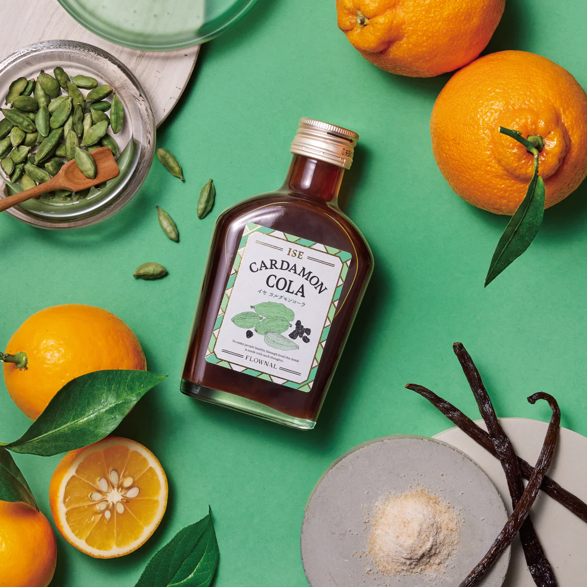

日本酒ガイド
日本酒の魅力と楽しみ方
SAKE BASICS 日本酒とは？
日本酒は、米と米麹、そして水のみを原料として作られる、日本固有の醸造酒です。その歴史は古く、日本の文化や食生活と深く結びついています。多様な風味と香りが特徴で、近年では海外でも高い評価を受けています。
純米酒、吟醸酒、大吟醸酒など、精米歩合や製造方法によって様々な種類があり、それぞれ異なる個性を持っています。

TYPES OF SAKE ( 日本酒の主な種類 )
-
純米酒
米、米麹、水のみで造られ、米本来の旨味を味わえます。
-
吟醸酒・大吟醸酒
低温で時間をかけて発酵させ、華やかな香りが特徴です。
-
本醸造酒
醸造アルコールを少量添加し、すっきりとした味わいです。
HOW TO ENJOY おすすめの飲み方
冷酒

冷蔵庫や氷水で5〜10℃程度に冷やしましょう。特に吟醸酒や大吟醸酒は、冷やすことで香りと味わいが際立ちます。乾杯や食前酒にぴったりです。

常温
日本酒を20℃前後の室温に戻しましょう。急な温度変化を避けることで、米の旨味や香りが引き立ちます。特に純米酒や熟成酒は、常温で飲むことで豊かな風味を楽しめます。

燗酒
徳利に日本酒を入れ、湯煎で30〜50℃程度に温めましょう。温度によって味わいが変化し、特に本醸造酒や純米酒は、温めることで香りが開き、まろやかな口当たりになります。